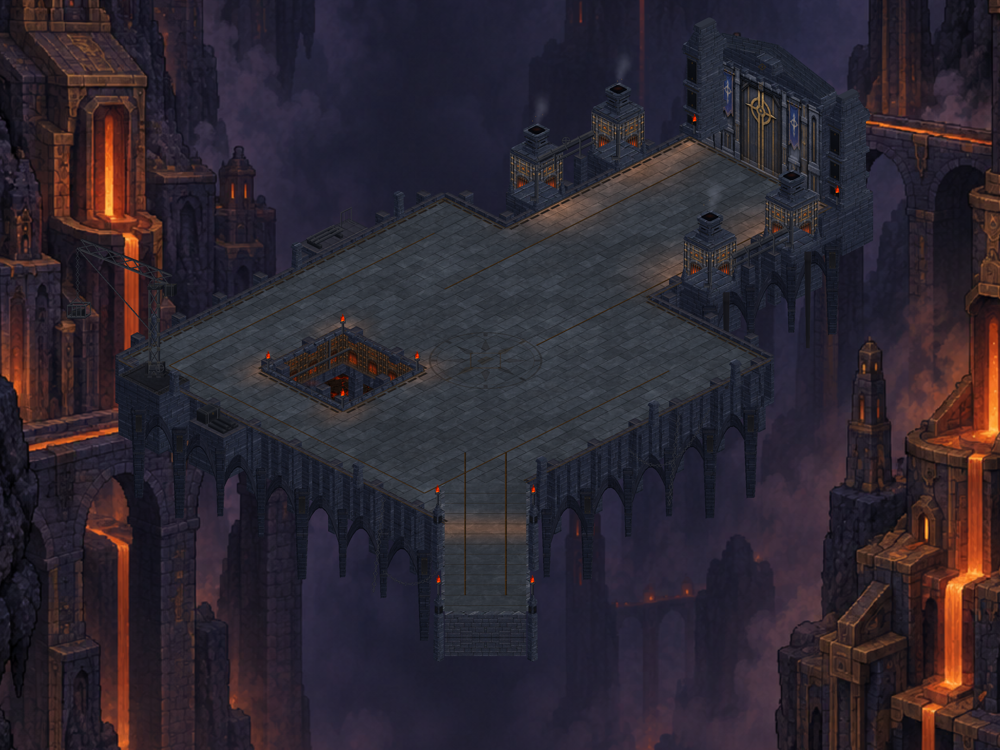

Dökümhanenin odak noktaları
Kapı, fırın kaideleri, köprü girişi ve kuyu çevresi aynı mimari dilde. Önceki vinç ve dış cephe düzenlemeleri bu paketin içinde korunuyor.

Görüntüler gerçek Unity yakalamalarıdır. Telefon kurulumu ve test durumu üretim kaydında ayrıca belirtilir.
Üretim ve doğrulama kaydı